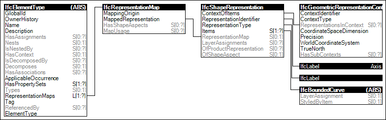

Link to this page
Link to this pageThe Axis representation may be defined on product types that have a concept of a linear representation, which may also correspond to structural axis or distribution flow path.
For distribution elements, this represents the 3D flow path of the item having IfcShapeRepresentation.RepresentationType of 'Curve3D' and containing a single IfcBoundedCurve subtype such as IfcPolyline, IfcTrimmedCurve, or IfcCompositeCurve. For elements containing directional ports (IfcDistributionPort with FlowDirection of SOURCE or SINK), the direction of the curve indicates direction of flow where a SINK port is positioned at the start of the curve and a SOURCE port is positioned at the end of the curve. This representation is most applicable to flow segment types (pipes, ducts, cables), however may be used at other elements to define a primary flow path if applicable.
If an element type is defined parametrically (such as a flow segment type defining common material profile but no particular length or path), then no representations shall be asserted at the type.
NOTE The product representations are defined as representation maps (at the level of the supertype IfcTypeProduct, which get assigned by an element occurrence instance through the IfcShapeRepresentation.Item[1] being an IfcMappedItem.
Figure 56 illustrates an instance diagram.
 |
Figure 56 — Type Axis Geometry |